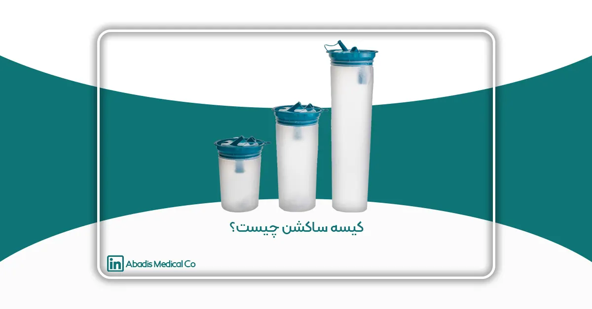
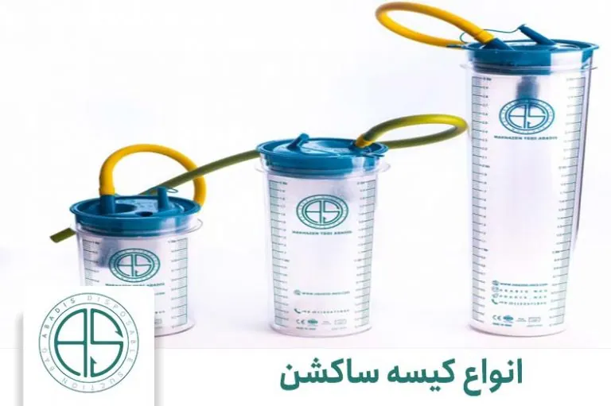
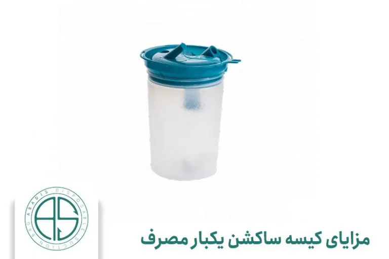
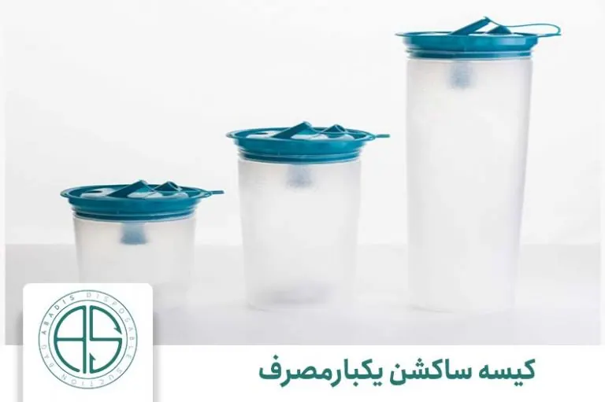
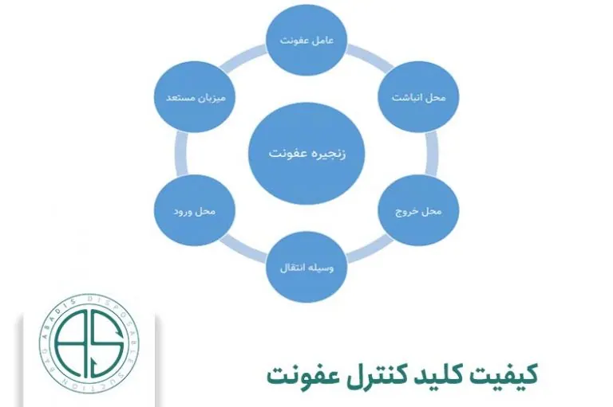

کیسه ساکشن چیست؟ آیا تا به حال فردی از Suction Bag برای شما توضیحی ارائه داده است؟ سعی کردیم در این مقاله کیسه ساکشن، تاریخچه، کاربردها و ویژگیهای آن را برای شما توضیح دهیم که درک بهتری نسبت به آن به دست آورید. پس تا انتهای این مقاله با ما همراه باشید.
آشنایی اولیه با دستگاه ساکشن
برای اینکه مبحث “کیسه ساکشن چیست؟” را شروع کنیم، بهتر است که نگاهی کلی به دستگاه ساکشن بیندازیم و همچنین با کارایی آن آشنا شویم.
واژه انگلیسی Suction در زبان پارسی به معنی مکش است. این دستگاه توسط پمپی عمل مکش را شروع میکند و با استفاده از خلأ باعث ایجاد فشار منفی میشود که هوا یا مایعات را به درون مخزن تعبیه شده وارد کند. بیشترین مورد استفاده از این دستگاه مربوط به صنعت پزشکی است که بصورت اختصار می توان به تخلیه خون، کمک به پیدا کردن محل خونریزی، برداشتن یا گرفتن تومور، نخلیه یا پاک کردن مجاری تنفسی بیماران، فعال کردن اندام های جنسی مردان و بانوان اشاره کرد.مبحث “کیسه ساکشن چیست؟” را شروع کنیم، بهتر است که نگاهی کلی به دستگاه ساکشن بیندازیم و همچنین با کارایی آن آشنا شویم.
آشنایی بیشتر با کیسه ساکشن
در ادامه پاسخ به سوال کیسه ساکشن چیست؟ باید توضیح دهیم که کیسه ساکشن یکبار مصرف جزئی از مجموعه دستگاه ساکشن است که مایعات یا هوای مکیده شده وارد آن میشود. این کیسه انواع مختلفی دارد. اغلب از این کیسهها برای موارد پزشکی در اتاق عمل یا کاربردهای پزشکی دیگر استفاده میشود.
اما کار برد آن صرفا به عمل جراحی ختم نمیشود، از دستگاه ساکشن برای بیماران تنفسی که به دلیل وجود ترشحات در ریه، قادر به تنفس نیستند هم کاربرد دارد.
برای اینکه میزان عفونت و انتقال بیماریها به صفر سوق پیدا کند، از کیسههای ساکشن یکبار مصرف استفاده میشود. همچنین استفاده و مصرف این کیسهها بسیار آسان و راحت است و همین دلیل باعث شده طرفداران بسیاری پیدا کند.
کاربرد کیسه ساکشن یکبار مصرف
همانطور که اشاره کردیم، از این کیسهها برای جمعآوری و مکیدن مایعات توسط دستگاه ساکشن استفاده میشود. میتوان گفت که این کیسهها مدلهای مدرنیزه مخزنهای ثابت ساکشن هستند. سالهای قبل که مدلهای یکبار مصرف ساخته نشده بودند، مخازن ثابت مشکلاتی برای پزشکان و بیماران به وجود میآوردند.
مخازن ثابت به خاطر اینکه برای مدت زمان بسیار زیاد استفاده میشدند، باعث انتشار عفونتها از بیماری به بیمار دیگر میشدند (اگر به خوبی ضد عفونی نمیشدند!). در نتیجه این کیسههای یکبار مصرف از انتشار بیماری و عفونت جلوگیری خواهند کرد.
انواع کیسه ساکشن
از سؤالهای مهم دیگری که در موضوع کیسه ساکشن چیست؟ مطرح میشود، انواع مدلهای آن است! این کیسهها در اندازههای چند لیتری مختلفی تولید میشوند. برای مثال کیسههای ۱ لیتری، کیسههای ساکشن دو لیتری و همچنین کیسههای سه لیتری.
همچنین کیسه ساکشن یکبار مصرف دارای سه نوع فیلتراسیون هستند. انواع این فیلترها شامل هیدروفوبیک، دوئال و مکانیکی میشوند.

کیسههای ساکشن در حجمهای یک لیتری، دو لیتری و سه لیتری تولید میشوند.
معرفی کیسه ساکشن یکبار مصرف
ابتدا به شرح مساله کنترل عفونت های بیمارستانی پرداخته و سپس کیسه ساکشن های یکبار مصرف دفع بهداشتی ساکشن را که در این مقوله بسیار موثرند معرفی و ویژگی های مختلف آن ها را بیان می کنیم.
ریسک ابتلای بیمارانی که در بخش های مراقبت ویژه بستری هستند و یا مورد جراحی قرار می گیرند، به عفونت بیمارستانی بسیار بالاست.
برای نمونه، اندکی قبل بیمارانی که در بخش مراقبت های ویژه یکی از بیمارستان های تهران بستری بودند، به دلیل ابتلا به عفونت بیمارستانی دار فانی را وداع گفتند و عده ای دیگر با افزایش چشمگیر طول مدت درمان مواجه گشتند.
در بیشتر موارد این دست از بیماران به درمان با آنتیبیوتیک مقاوم می شوند. در تعریف عفونت های بیمارستانی باید گفت آن دسته از عفونت هایی هستند که در زمان پذیرش شدن بیمار در وی وجود نداشته و در حین مدت بستری شدن در بیمارستان ایجاد می شوند.
آمارها نشان می دهند در کشورهای توسعه یافته صنعتی بین ۵ تا ۱۰ درصد بیماران بستری شده در بیمارستان مبتلا به عفونت های بیمارستانی می شوند و این رقم در کشورهای در حال توسعه تا حدود ۲۵ درصد افزایش پیدا می کند.
البته با اجرای صحیح برنامه های کنترل عفونت و استفاده از ابزار مناسب، می توان از نیمی از این تعداد کاست. امروزه با سرمایه گذاری وسیعی که در زمینه کنترل عفونت انجام می شود و با توجه به استفاده از تجهیزات و امکاناتی نظیر ظروف یک بار مصرف مخصوص عفونت های بیمارستانی به شکل قابل توجهی کاهش یافته اند.
برای درک اهمیت سرمایه گذاری در زمینه کنترل عفونت و به کارگیری تجهیزات مناسب، در اینجا به حقایقی در زمینه عفونت های بیمارستانی که توسط سازمان جهانی بهداشت منتشر شده است اشاره میکنیم.
* روزانه ۴۰۰۰ کودک در کشورهای در حال توسعه در اثر عفونت های بیمارستانی دچار مرگ و میر می شوند.
* یکی از عواقب عفونت های بیمارستانی طولانی شدن مدت زمان بستری بیماران در بیمارستان است. به طوری که عفونت های بیمارستانی مجاری ادراری تقریبا ۳ روز، عفونت های محل جراحی ۱۰ روز، عفونت های ریوی ناشی از بستری شدن در بیمارستان حدود ۲۰ روز به مدت زمان بستری شدن بیماران اضافه می کنند.
* به ازای هر تخت مراقبت ویژه، بهره گیری از ابزارآلات مناسب نظیر کیسه های یکبار مصرف دفع ساکشن میتواند تا ۱۰۰۰دلار در سال در هزینه های درمانی به همراه آورد.
به کارگیری این محصول خصوصا در بیماران بستری در بخشهای مراقبت ویژه اهمیت دارد؛ زیرا بیماران بستری در بخش های مراقبت ویژه بسیار بیشتر در معرض ابتلا به عفونت های بیمارستانی هستند.
این موضوع به دلیل، جدی بودن بیماریبیماران بخش مراقبت های ویژه، طولانی بودن زمان بستری آنها، ونتیلاسیون با دستگاه و نیز وجود جراحات و زخم روی بدن آن ها است.
احتمالا ابتلا به عفونت از طریق هوای آلوده و تجهیزات آلوده متصل به بیمار نظیر لوله ساکشن در زمان داشتن جراحت و یا زمان طولانی بستری شدن بسیار است. یکی از راه های موثر در کاهش ریسک انتقال عفونت استفاده از کیسه های مصرفی ساکشن مجهز به فیلتر آنتی باکتریال است.
با استفاده از کیسه های یکبار مصرف ساکشن میتوان خطر انتشار میکروارگانیسم های خطرناک موجود در مایعات عفونی و ساکشن از طریق هوا و ذرات قابل تنفس را کاهش داد و همچنین می توان کمک فراوانی به کنترل عفونت و خطرات ناشی از آن خصوصا در بخش مراقبت های ویژه کرد.
به یاد داشته باشید که این کیسه ها برای جلوگیری از انتشار عفونت باید به فیلتر آنتی باکتریال مجهز باشند.
فیلتر آنتی باکتریال باعث عدم خروج میکرو ارگانیزم ها به همراه هوای مکیده شده از کیسه می شود و این سبب می شود که میکروارگانیسم های رشد یافته داخل کیسه به محیط بیرون انتشار نیابند. کیسه های یکبار مصرف ساکشن راهی مفید برای کاهش خطر انتشار عفونت به وسیله تماس کارکنان بخشهای مختلف درمانی با ضایعات عفونی و ترشحات ارگانیک می باشد.
برای کاهش هزینه های ناشی از ضدعفونی کردن (همچون هزینه مواد ضد عفونی کننده، هزینه های آب و برق و خدمه) استفاده از کیسه های یک بار مصرف ساکشن بهترین گزینه است.
از سویی دیگر، سهولت به کار گیری کیسه های یک بار مصرف ساکشن، با نمونه های قابل شستشو قابل مقایسه نیست. به علاوه از آن جا که این کیسه ها دیگر نیازی به غوطه ور شدن در محلول های ضد عفونی کننده و اتوکلاو ندارند، تماس کارکنان بخش خدماتی با این کیسه ها به حداقل رسیده و احتمال ابتلای آنان به عفونت کاهش می یابد.
در کشور آمریکا ۸۰ ٪ مراکز بهداشتی درمانی از کیسه های ساکشن یک بار مصرف استفاده می کنند. در مراکز درمانی که به جای ظروف یک بار مصرف از ظروف قابل شستشو استفاده می شود، باید هر ۲۴ ساعت این ظروف شسته شوند.
اما اگر منطقی به این موضوع بنگریم، مشاهده می کنیم که دستورالعملی دشوار و وقت گیر است و به همین دلیل معمولا به درستی از سوی کارکنان بیمارستان صورت نمی گیرد؛ همین امر بیماران را در خطر ابتلا به عفونت قرار می دهد.
جهت دور انداختن ایمن کیسه های یک بار مصرف ساکشن، آن ها را به طور کاملا بسته طراحی می کنند. بنابراین تنها کافی است کیسه ساکشن را از داخل ظرف حمایتی خارج کرده و امحا نمایید.
در نتیجه دیگر نیازی به شستشو و ضد عفونی ظرف و قرار گرفتن در معرض خطر ابتلا به عفونت نیست. برخی افراد غیر حرفه ای در روش قدیمی، یعنی استفاده از ظروف قابل شتشو، معمولا مایعات ساکشن شده را در چاه فاضلاب بیمارستان تخلیه می کنند.
که به دلیل امکان انتقال عفونت به محیط زیست و آب های زیرزمینی کاری بسیار غلط است؛ به علاوه تصفیه فاضلاب فرایندی بسیار پرهزینه می باشد.
مدیریت هوشمند مایعات عفونی با کیسه ساکشن
پیشرفت در علم و مراقبت های بهداشتی منجر به بهبود کنترل عفونت برای ایمنی بیماران و متخصصان می شود تا سال های گذشته کنترل عفونت در مراکز درمانی به این گستردگی وجود نداشت ، آبادیس با استفاده از راهکار هایی که برای مدیریت پسماند مایعات ارائه می دهد خطرات ناشی از عفونت بیمارستانی را کاهش می دهد.
برای تمامی مراکز بهداشتی کنترل عفونت امری ضروری است طبق گزارش سازمان بهداشت جهانی ۳۲ درصد از بیمارانی که جراحی می شوند به عفونت بیمارستانی دچار می شوند ؛ عفونت های بیمارستانی دومین نوع شایع عفونت مرتبط با مراقبت های بهداشتی در اروپا و ایالات متحده است .
امروزه روش ها و فناوری های بسیاری برای اطمینان از ایمنی بیماران و متخصصان مراقبت های بهداشتی مشخص شده است ، دنبال کردن دستورالعمل های دقیق و مطالعه در این باره تاثیر بسزایی در کنترل عفونت بیمارستانی دارد از جمله روش های ساده برای از بین بردن این نوع عفونت شامل بهداشت دست، تجهیزات محافظتی شخصی ، تمیز کردن و ضدعفونی تا پایان دفع مواد زائد است. با این حال هنوز فضای زیادی برای پیشرفت وجود دارد.
مدیریت مایعات از نکات مهم برای افزایش کنترل عفونت است ما در آبادیس کیسه ساکشن یکبار مصرف را تولید کرده ایم و سعی در به حداقل رساندن خطر ناشی از عفونت بیمارستانی داریم و تمام هدف خود را در این راستا قرار داده ایم . ما با طراحی محصولات خود به ایجاد امنیت در محل کار متخصصان مراقبت های بهداشتی کمک می کنیم.
مزایای کیسه ساکشن های یکبار مصرف آبادیس
کیسه ساکشن یکبار مصرف شرکت مخازن طبی آبادیس سیستم کاملا بسته ای را جهت ساکشن ترشحات و ژل کردن آنها ارایه می دهد که دارای مزایا و قابلیتهای زیر است:
– جلوگیری از تجمع ترشحات ( خون، ذرات و ترشحات عفونی )
– جلوگیری از تجمع هوا (فضای مرده)
– جلوگیری از انتشار عفونت، باکتری و بیماری
– امحا امن و آسان
– عدم نیاز به آب و مواد ضدعفونی کننده
– استفاده راحت و سریع
– جلوگیری از انتشار بخار و بوی ناشی از عفونت
– کاهش هزینههای درمان
– مجهز به فیلتر برای محافظت از دستگاه ساکشن
– طراحی ساده و مدرن
– بدون نیاز به زانویی
– دارای کانکتورهای یونیورسال برای جلوگیری از پیچ خوردگی و قطع شدن ساکشن حتی در هنگام کار در زوایای بسته
– قابلیت نصب بصورت سری و مجزا
– حمل و نقل ایمن
همانطور که در بخشهای قبل در مورد کیسه ساکشن چیست اشاره کردیم، این کیسهها از شیوع بیماری و انتشار عفونتها جلوگیری میکنند. در کنار این مزیت بسیار عالی، استفاده از کیسه ساکشن یکبار مصرف هزینه خرید و استفاده از مواد ضد عفونیکننده برای مراکز درمانی و کلینیکها را تا حد زیادی کاهش میدهد.
در کنار این کاهش هزینه، حتی هزینه ضدعفونی کردن مخازن هم کاملاً از فاکتورها حذف میشود! نحوه مصرف و استفاده از این کیسهها بسیار آسان است. برای جلوگیری از هرگونه سو استفاده، این کیسهها میتوانند امحا شوند!
همه این کارها بر کاهش میزان هزینههای نیروی انسانی هم تأثیر مستقیم میگذارند! همچنین کادر پزشکی برای ضد عفونی کردن دستگاه و تعویض کیسه ساکشن دیگر به صورت مستقیم با ضایعات در تماس نخواهند بود!
به خصوص امروزه به دلیل پاندمیک کووید ۱۹، همه مراکز بهداشتی و کلینیکها باید به طور اجباری از تجهیزات پزشکی یکبار مصرف استفاده کنند که بیماری میان مردم گسترش نیابد!
به خاطر وجود پودرهای مخصوصی درون این کیسهها، ضایعات مایع به شکل ژله درمیآیند، در نتیجه کار برای امحا راحتتر میشود. همچنین میزان ریسک ریخته شدن مایعات عفونی و آلوده کردن محیط تا حد چشمگیری کاهش پیدا خواهد کرد!

جلوگیری از شیوع بیماری و انتشار عفونت از مزیتهای کیسه ساکشن یکبار مصرف است.
ویژگی و انتخاب کیسه ساکشن مناسب
در انتخاب کیسه های ساکشن یکبار مصرف مناسب و با کیفیت لازم است کارشناسان کنترل عفونت و مهندسی پزشکی به چند ویژگی حائز اهمیت توجه داشته باشند.
با توجه به این که امروزه کیسه های متنوعی در بازار موجود هستند، در ادامه، به بررسی ویژگی های کیسه یک بار مصرف مناسب و با کیفیت خواهیم پرداخت.
وجود پودر ژل کننده، یکی دیگر از ویژگی های مهم یک کیسه ساکشن یک بار مصرف است.
در صورتی که پودر دارای خاصیت کشندگی میکرو ارگانیزم ها باشد، کارایی بهتری دارد.
به کمک این ویژگی می تواند در زمان کوتاهی مایعات جمع آوری شده را به ژل نیمه جامد تبدیل کند.
این امر افزایش ایمنی مسئولین نظافت و جمع آوری مواد آلوده و عفونی بیمارستان را به دنبال خواهد داشت.
با وجود پودر ژل کننده حتی اگر کیسه ها به طور اتفاقی پاره شوند و مایعات عفونی به بیرون بریزند، خطر آلودگی برای پرسنل بیمارستان و بیماران به طور چشمگیری پایین تر خواهد آمد.
برخی از این پودرها دارای افزودنی هایی برای حذف بوی بد مایعات ساکشن شده هستند. این عامل نیز می تواند در انتخاب محصول مورد نظر لحاظ گردد.
ابعاد کیسه ساکشن های یکبار مصرف

نمونه ای از کیسه ساکشن های یکبارمصرف
کیسه های یک بار مصرف ساکشن مانند کیسه های عادی ساخته می شوند و از جنس پلی اتیلن نرم هستند.
پس از هر بار استفاده کیسه بدون تماس محتویات با دست اشخاص به دور انداخته می شود. مقاوم بودن جنس کیسه ها در برابر ضربه و فشار عامل بسیار مهمی است که در هنگام خریداری باید حتما رعایت شود.
همچنین به یاد داشته باشید که مقاوم بودن کیسه در برابر خروج مایعات در نقاط اتصال امری کاملا حائز اهمیت است.
زباله های بیمارستانی به صورت روزانه تخلیه می گردند و زیاد نبودن وزن آن ها نکته ایست که برای کارکنان بخش مربوطه از اهمیت بالایی برخوردار است.
بنابراین از آن جا که کیسه های یکبار مصرف ساکشن بعد از استفاده مستقیما دور انداخته می شوند، سبک بودن آن ها بسیار مهم است. کیسه های یک بار مصرف ساکشن در حجم های متنوع ۱ لیتری، ۲ لیتری و ۳ لیتری برای استفاده موجود هستند.
هر کدام از این حجم ها برای استفاده خاصی طراحی شده اند.برای مثال کیسه ساکشن های یکبار مصرف 2 لیتری برای بخش های اورژانس و ICU و CCU مناسب بوده و کیسه ساکشن های یکبار مصرف 3 لیتری برای بخش جراحی مناسب است.
گاها حجم ساکشن تخلیه شده زیاد است. در این گونه موارد باید بتوان از چند کیسه ساکشن به طور همزمان استفاده کرد. پس کیسه خوب کیسه ای است که قابلیت سری کردن داشته باشد.
برای مشاهده حجم پر شده از کیسه، آن را به صورت درجه بندی شده طراحی می نمایند.
با این حال برخی طراحان برای این که جزئیات مایع درون کیسه دیده نشود، آن را به شکل مات یا کدر طراحی می کنند.
اما این کار کاملا غیر حرفه ایست. زیرا پرسنل پزشکی باید بتوانند به راحتی میزان حجم اشغال شده مایع ساکشن را تشخیص دهند و در صورت نیاز اقدام به تعویض کیسه نمایند.
لذا در هنگام خرید کیسه حتما توجه داشته باشید که کیسه از جنس شفاف باشد.
یکی دیگر از ویژگی هایی که یک کیسه مطلوب باید داشته باشد، این است که تا به پر شدن کامل کیسه، در پر کردن آن متوقف نشود. این مشکل هنگامی بروز می کند که کیسه به دلیل طراحی غیر اصولی، پس از پر شدن تا نیمه، دچار افت فشار شده و عمل ساکشن متوقف می شود.
به یاد داشته باشید که برای اطمینان از صحت کیسه حتما آن را در محل خرید آزمایش کنید.
طراحی برای ایمنی
سازمان جهانی بهداشت بر مسئله کنترل عفونت تاکید دارد ، ممکن است برخی تصور کنند که کیسه ساکشن یکبار مصرف فقط یک کیسه پلاستیکی است اما ما با این تصور مخالف هستیم ، تمام جزئیات یک کیسه باید به دقت مورد توجه قرار بگیرد و هر قسمت از کیسه باید مطابق با محیط های مراقبت بهداشتی، روند و نیاز ها طراحی شود واضح است که کیسه ساکشن خیلی بیش تر از یک کیسه معمولی است.
در مشاهدات خود از کار با پسماند مایعات ما از استفاده تا دفع یک روش جامع را در پیش گرفتیم دفع کیسه های ساکشن با استاندارد های بالای بهداشت محیط بیمارستان مطابقت نداشت در چندین بیمارستان تخلیه دستی انجام می شد که این روند کارکنان را در معرض پاشش عوامل بیماری زای منتقله از طریق خون مانند هپاتیت c و HIV قرار می دهد و باعث افزایش شیوع عفونت های مرتبط با مراقبت های بهداشتی می شود .
با مرور کل زنجیره روش های ایمن تری را جایگزین کردیم به جای تخلیه دستی پس از استفاده آن را امحا میکنیم .
در آبادیس طبیعت ماست که همیشه به دنبال راه حل های بهتر باشیم با استفاده از راهکار های جدید و هوشمند و ایمن مدیریت مایعات کاربران می توانند در جایی که ورودی آن ها بیش ترین ارزش را دارد تمرکز کرد: بیماران و نه تجهیزات.
بهترین روش برای بهره وری بهینه از کیسه ساکشن
- 1: داشتن فیلتر آنتی باکتریال به منظور جلوگیری از انتشار میکروارگانیسم ها
- 2: ظرفیت کیسه ساکشن متناسب با دستگاه ساشکن مورد استفاده
در مبحث کیسه ساکشن چیست؟ سؤالی مطرح خواهد شد، “برای اینکه بازدهی بیشتری برای کیسه ساکشن داشته باشیم، باید چه اقداماتی انجام دهیم؟”. برای اینکه بیشترین بازدهی را داشته باشیم، باید دستگاهی را انتخاب کنیم که توان موتور آن بالا باشد.
برای جلوگیری از شیوع بیماریها بدنه دستگاه باید قابلیت ضدعفونی شدن بسیار بالایی داشته باشد! کیسه ساکشن مورد نظر شما باید ظرفیت بیشتری داشته باشد. همچنین توان خروجی کلی دستگاه هم باید بالا باشد.
به طور کلی تمام کیسه ساکشن های یکبار مصرف، از انتقال عفونت جلوگیری میکنند. اما آنهایی تاثیرگذاری بیشتری دارند که در قسمت بالایی آنها، فیلتر آنتی باکتریال تعبیه شده است.
کیفیت، کلید کنترل عفونت

زنجیره عفونت به صورت نمودار نمایش داده شده است
آیا شرایطی را تجربه کرده اید که استفاده از کیسه ساکشن نادرست باعث ایجاد خطر آلودگی شده باشد؟ این می تواند دلایل مختلفی داشته باشد : در طول یک عمل ممکن است کیسه های ساکشن خراب شوند و یا پس از اتمام مراحل ممکن است هنگام خالی شدن کیسه ساکشن مایع به بیرون پاشیده شود که این احتمالا به دلیل نشتی هنگام حمل و نقل است .
هیچ دلیلی برای به خطر انداختن ایمنی بیماران یا متخصصان مراقبت های بهداشتی با محصولات کیفیت پایین یا روش های کمتر از بهینه وجود ندارد. طبق محاسبات سازمان جهانی بهداشت پیشگیری وکنترل عفونت موثر حداقل ۳۰ درصد از عفونت های مرتبط با مراقبت های بهداشتی ر ا کاهش می دهد و ما مفتخریم که با راه حل های خود کمک کنیم.
با آبادیس کیفیت به معنای طراحی محصول برای هر مرحله استفاده از آن است و این اطمینان را می دهد که کیسه های ساکشن ما نشت نمی کنند در حالی که استفاده از آن آسان است میزان خرابی آن یک در میلیون است.
نتیجه گیری
گروه مدیران شرکت آبادیس برای نامی پرآوازه و معتبر موفق به اخذ استاندارد مدیریت در تجهیزات پزشکی ایزو ۱۳۴۸۵ و رضایتمندی مشتری و ایزو ۱۰۰۰۲ گردیده است.
(با مراجعه به صفحه آشنایی با ما آبادیس را بیشتر بشناسید)
با اتکا به سالها تجربه گرانقدر، این شرکت طیف وسیعی از دستگاهها و تجهیزات در مراکز وابسته به وزارت بهداشت، درمان و آموزش پزشکی، بیمارستانهای نظامی و خصوصی و مراکز درمانی و کلینیکهای پزشکی را تحت پوشش قرار داده است.
یکی از اهداف مهم آبادیس در سالهای حضور در عرصه صنعت مهندسی پزشکی کشور کنترل عفونت بیمارستانی بود.
آبادیس در چشم انداز خود در ابتدای تاسیس، نگاه ویژه به تولید ملی و خودکفایی داشت و به حول قوه الهی با داشتن هیئت علمی متشکل از اساتید دانشگاه و متخصصین و مهندسین خبره در سال ۲۰۱۳ به تولید ملی کیسههای ساکشن یکبار مصرف با برند آبادیس که در نوع خود برای اولین بار در دنیا و در حال حاضر تنها تولید کننده خاورمیانه می باشد، رسید که در نوبه خود گامی محکم در کنترل عفونت بیمارستانی در ایران برداشت.
آبادیس در راستای رسیدن به اهداف خود در تولید ملی در حال حاضر آماده خدمت رسانی به تمامی مراکز درمانی بیمارستانها در زمینه کنترل عفونت بیمارستانی با نسل جدید کیسههای ساکشن یکبار مصرف می باشد.
با توجه به آمار بالای مرگ و میر ناشی از عفونت های بیمارستانی خصوصا در بخش های مراقبت های ویژه و اتاق عمل، ضرورت کنترل و پیشگیری عفونت های بیمارستانی به خوبی برای مدیران و مسئولین پزشکی روشن شده است.
با به کارگیری تجهیزات مربوطه جهت کنترل عفونت های بیمارستانی می توان علاوه بر کاهش هزینه های مالی، جان هزاران بیمار را که همه ساله بر اثر عفونت جان خود را از دست می دهند، نجات داد.
در حال حاضر تلاش های زیادی برای برای تحت پوشش بیمه قرار دادن این دست تجهیزات و امکانات صورت گرفته و امید است در آینده ای نزدیک با به کارگیری مناسب این محصول شاهد بهبود هر چه تمام تر شرایط در زمینه کنترل عفونت های بیمارستانی باشیم.